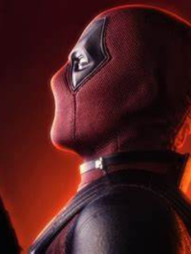

Sobre o Deadpool
Deadpool é visto segurando as suas duas armas
Deadpool, cujo nome verdadeiro é Wade Wilson, é um mercenário com um senso de humor peculiar e uma tendência a quebrar a quarta parede. Ele ganhou suas habilidades regenerativas após ser submetido a um experimento que te ntou curar seu câncer. Essas habilidades o tornaram praticamente imortal, mas também deixaram seu corpo severamente desfigurado. Deadpool é conhecido por sua personalidade caótica e suas aventuras cheias de ação e comédia.
Aliados do Deadpool
Cable
Cable, ou Nathan Summers, é o filho de Cyclops e Madelyne Pryor. Ele é um mutante com habilidades telecinéticas e telepáticas, além de ser um guerreiro viajante do tempo. Infectado com um vírus tecno-orgânico, ele foi enviado ao futuro para ser tratado. No futuro, ele se tornou um guerreiro poderoso e eventualmente voltou ao presente para se juntar aos X-Men e à X-Force. Sua relação com Deadpool é complexa, mas eles formam uma parceria eficaz.
Volverine
Wolverine, cujo nome verdadeiro é James "Logan" Howlett, é um mutante com habilidades regenerativas, sentidos aguçados e garras retráteis de adamantium. Ele tem uma história longa e complicada, marcada por perda e sofrimento. Wolverine é um membro dos X-Men e é conhecido por sua natureza feroz e seu forte senso de justiça. Sua regeneração rápida o torna quase indestrutível, e ele é um dos personagens mais icônicos da Marvel.
Colossus
Colossus, ou Piotr "Peter" Nikolayevich Rasputin, é um mutante russo com a habilidade de transformar seu corpo em aço orgânico, concedendo-lhe força sobre-humana e invulnerabilidade. Ele é um membro dos X-Men e é conhecido por sua natureza gentil e seu forte senso de dever. Colossus frequentemente tenta manter Deadpool na linha e ajudá-lo a ser um herói melhor.
Vilões do Deadpool
Thanos
Thanos é um dos vilões mais poderosos e icônicos do universo Marvel. Ele é um Titã louco obcecado pelo equilíbrio do universo. Para alcançar seu objetivo, ele busca as Joias do Infinito, que lhe concedem poder ilimitado. Thanos é conhecido por seu ato infame de eliminar metade da vida no universo com um estalar de dedos, um evento conhecido como o "Estalo".
Morte
Morte é uma entidade cósmica no universo Marvel, personificando o conceito de morte. Ela tem uma relação complexa com Thanos, que está apaixonado por ela e busca constantemente impressioná-la com seus atos de destruição. Morte também tem uma conexão com Deadpool, que é um dos poucos personagens que pode vê-la e interagir com ela diretamente.
Carnificina
Carnificina, cujo nome verdadeiro é Cletus Kasady, é um dos vilões mais violentos e sádicos da Marvel. Ele se torna Carnificina quando se funde com um simbionte alienígena, semelhante ao Venom. Ao contrário de Venom, Carnificina é completamente insano e tem um desejo insaciável de causar caos e destruição.